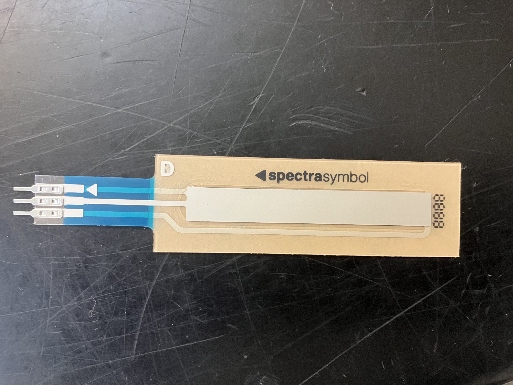
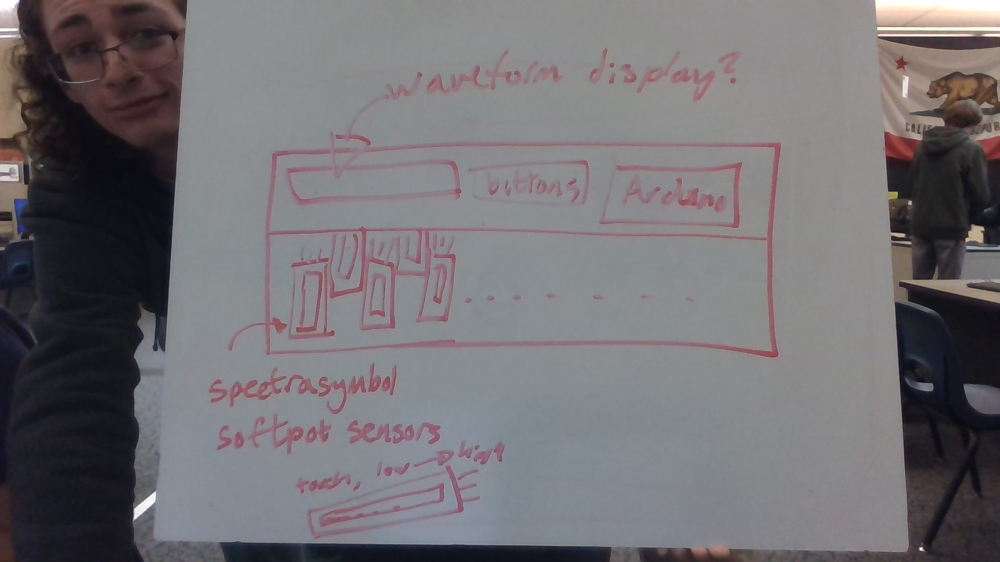

Mr. Crockett showed me some of these sensors that output different voltages based on how high up you press (basically a touch sensitive potentiometer).
This gave me the idea of a keyboard that used these for volume, pitch, or something else.

We drew a simple diagram of what the keyboard might look like! It looks kinda boring and standard like this, but it's input method is pretty unique.
If we don't end up making enough keys for a keyboard we can keep it as a fancy drumpad. Even if we have enough keys for a proper set of synthesizers, we'll add a drumpad mode.